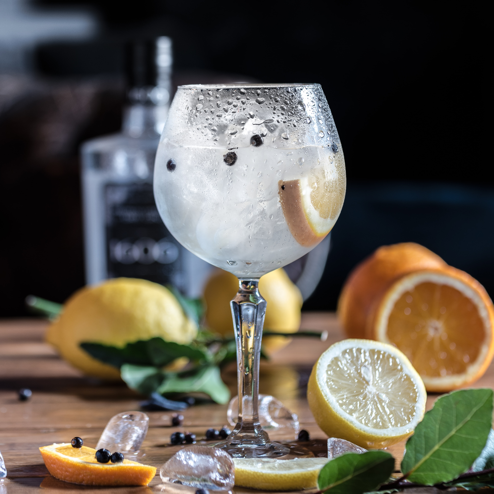

Tragos
Mojito
Ingredientes: (para 1 cóctel)
- 2 cdas azúcar blanca o mascabo
- 1 / 2 jugo de lima o limón
- 6 hojas menta fresca
- 60 ml ron blanco
- 120 ml agua con gas
- Cubitos hielo c/n
Preparación:
- Primero tomar una lima, cortarla al medio y extraer su jugo.
- En un vaso de trago largo coloque 25ml de jugo de lima, 25 ml de agua con gas, y una cucharada de azúcar.
- Ahora debe revolver hasta diluir el azúcar y el limón y unificar los sabores.
- Luego, agregue dos ramitas de hierba buena o menta.
- Con una cuchara larga presione suavemente el tallo de la menta.
- La clave está en no machacar ni quebrar la menta.
- El objetivo es refrescar las paredes internas del vaso logrando que la menta desprenda todos sus aromas mientras bebe algunos sorbos.
- Agregar hielo y 50ml de ron blanco.
- Revolver y agregar un golpe de agua con gas.
- Con la cuchara extraiga las hojas de hierba buena a la superficie del vaso.
Bartender tip:
antes de empezar a hacer el cóctel pueden pasar un trozo de lima por el borde del vaso, también pueden cortar unas hojas de hierbabuena con la mano y pasarlas por el borde.

Tragos
Gintonic Naranja
Ingredientes: (para 1 cóctel)
- 50 cc de gin
- 100 cc de agua tónica
- 1 Naranja
- Cubitos hielo c/n
Preparación:
- Llenar ¾ copa con hielo y remover un poco para enfriarla.
- Cortar la naranaj por la mitad y luego una mitad en rodajas reservando estas para adornar.
- Eliminar el agua sobrante en la copa y exprimir ½ naranja dentro.
- Servir los 50 cc. de ginebra dentro de la copa.
- Por último colocar la copa de costado e ir agregando la tónica de a poquito.
- Decorar con los ¼ de naranja y mezclar con un giro.
Bartender tip:
Utiliza una copa tipo balón